CODING AGENTS AS PIXEL WORLD MODELS
traex/GPT-6-Astra · 0009
点击播放 · 原生 RGB 像素
此结果可播放，但该运行尚未通过最终提交审核。页面展示不代表评测通过。
逐轮保存的候选
回放视频、检查图与代码变化。
每份候选均可单独播放。实际图片检查记录在下方工具轨迹中。
候选 01播放与检查图
点击播放 · 原生 RGB 像素

展开代码变化
--- 上一保存版本
+++ 本次保存版本
@@ -0,0 +1,92 @@
+from pathlib import Path
+import math
+import cv2
+import numpy as np
+from PIL import Image
+import artifact_io
+
+ROOT = Path(__file__).resolve().parent
+W,H=256,144
+X,Y=np.meshgrid(np.arange(W,dtype=np.float32),np.arange(H,dtype=np.float32))
+
+def repair(image, shift, points):
+ donor=cv2.remap(image,X+shift[0],Y+shift[1],cv2.INTER_CUBIC,borderMode=cv2.BORDER_REFLECT)
+ mask=np.zeros((H,W),np.uint8)
+ cv2.fillPoly(mask,[np.asarray(points,np.int32)],255)
+ mask=cv2.dilate(mask,np.ones((7,7),np.uint8))
+ x,y,w,h=cv2.boundingRect(mask)
+ return cv2.seamlessClone(donor,image,mask,(x+w//2,y+h//2),cv2.NORMAL_CLONE)
+
+def warp(img, pivot, dx,dy, scale=1,angle=0):
+ mat=cv2.getRotationMatrix2D(pivot,angle,scale)
+ mat[:,2]+=(dx,dy)
+ return cv2.warpAffine(img,mat,(W,H),flags=cv2.INTER_CUBIC,borderMode=cv2.BORDER_CONSTANT)
+
+def main():
+ first=np.array(Image.open(ROOT/'first_frame.png').convert('RGB'))
+ no_ball=repair(first,(46,8),[(38,39),(47,35),(58,38),(61,42),(78,42),(80,47),(73,54),(58,58),(42,56),(37,49)])
+ clean=repair(no_ball,(-66,-12),[(148,50),(164,46),(182,47),(191,53),(211,56),(216,64),(211,76),(192,81),(172,83),(153,79),(143,68),(143,57)])
+ base=clean.astype(np.float32)
+ ball_difference=first.astype(np.float32)-no_ball.astype(np.float32)
+ duck_difference=no_ball.astype(np.float32)-base
+ # Partition the rolling sphere from its table-contact and cast shadows.
+ cx,cy=49.7,46.6
+ r=np.sqrt(((X-cx)/7.4)**2+((Y-cy)/8.1)**2)
+ core=np.clip((1.12-r)/.2,0,1)
+ core=cv2.GaussianBlur(core,(0,0),.45)
+ ball=ball_difference*core[:,:,None]
+ shadow=ball_difference*(1-core[:,:,None])
+ # Keep the rubber duck's cast shadow on the table while its body rocks.
+ yellow=(np.minimum(no_ball[:,:,0],no_ball[:,:,1]).astype(float)-no_ball[:,:,2])>25
+ yellow[:48]=False; yellow[77:]=False;yellow[:,:157]=False;yellow[:,191:]=False
+ support=cv2.dilate(yellow.astype(np.float32),np.ones((3,3),np.uint8))
+ support=cv2.GaussianBlur(support,(0,0),.6)
+ duck=duck_difference*support[:,:,None]
+ duck_shadow=duck_difference*(1-support[:,:,None])
+
+ # The line of travel projects directly from the black pipe mouth to the duck.
+ speed=63.0; roll_deceleration=5.2
+ contact_distance=106.0
+ hit=(speed-math.sqrt(speed*speed-2*roll_deceleration*contact_distance))/roll_deceleration
+ def state(t):
+ if t<=hit:
+ bx=speed*t-.5*roll_deceleration*t*t
+ return bx,0.,0.
+ u=t-hit
+ # A resilient impact transfers most momentum to the duck. The ball
+ # recoils a little, then comes to rest under rolling resistance.
+ tb=min(u,1.4)
+ bx=contact_distance-10.0*tb+(10.0/2.8)*tb*tb
+ td=min(u,1.45)
+ dx=35.*td-.5*(35./1.45)*td*td
+ tilt=-13.*math.exp(-2.8*u)*math.sin(9.8*u)
+ return bx,dx,tilt
+
+ def render(t):
+ bx,dx,tilt=state(max(t,0))
+ ball_scale=1+.00065*bx
+ image=base.copy()
+ if t<=hit:
+ image+=duck_difference
+ else:
+ sc=1.+.0006*dx
+ image+=warp(duck_shadow,(174.,73.),dx,.184*dx,sc)
+ image+=warp(duck,(174.,73.),dx,.184*dx,sc,tilt)
+ # The angular travel is tied to the arc length rather than elapsed time.
+ angle=-bx/(6.7)*180/math.pi*.86
+ image+=warp(shadow,(cx,cy),bx,.184*bx,ball_scale)
+ image+=warp(ball,(cx,cy),bx,.184*bx,ball_scale,angle)
+ return image
+
+ frames=[first]
+ for i in range(1,20):
+ t=i/4.
+ # Short, fixed exposure and constant-rate real-time playback.
+ rgb=sum(render(t+d) for d in (-.016,0,.016))/3.
+ frames.append(np.clip(np.rint(rgb),0,255).astype(np.uint8))
+ frames=np.asarray(frames,np.uint8)
+ artifact_io.save(frames,ROOT)
+ Image.fromarray(clean).save(ROOT/'.tmp/background.png')
+
+if __name__=='__main__':
+ main()
候选 02播放与检查图
点击播放 · 原生 RGB 像素

展开代码变化
--- 上一保存版本
+++ 本次保存版本
@@ -45,7 +45,7 @@
duck_shadow=duck_difference*(1-support[:,:,None])
# The line of travel projects directly from the black pipe mouth to the duck.
- speed=63.0; roll_deceleration=5.2
+ speed=58.2; roll_deceleration=5.2
contact_distance=106.0
hit=(speed-math.sqrt(speed*speed-2*roll_deceleration*contact_distance))/roll_deceleration
def state(t):
候选 03播放与检查图
点击播放 · 原生 RGB 像素
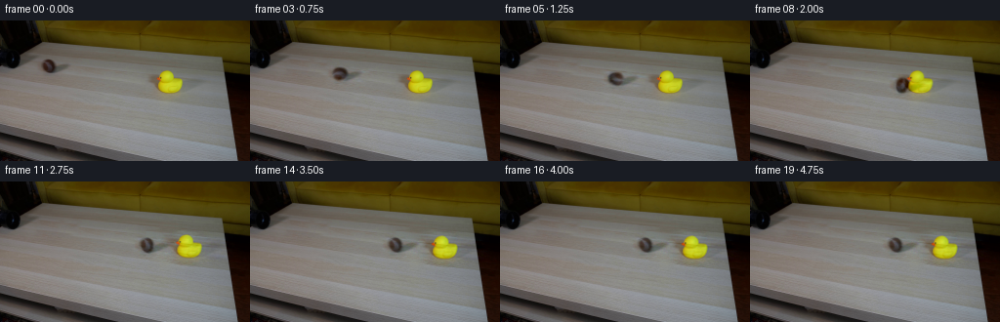
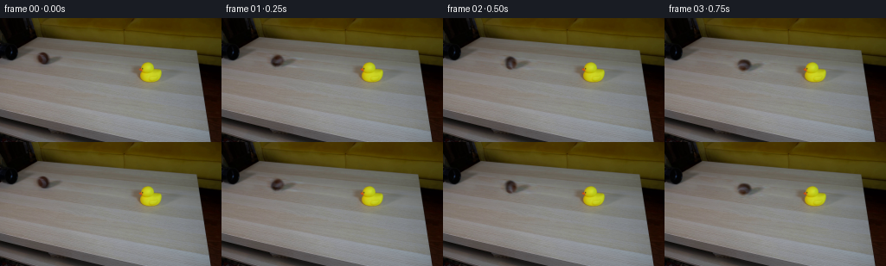
展开代码变化
--- 上一保存版本
+++ 本次保存版本
@@ -66,6 +66,7 @@
bx,dx,tilt=state(max(t,0))
ball_scale=1+.00065*bx
image=base.copy()
+ image+=warp(shadow,(cx,cy),bx,.184*bx,ball_scale)
if t<=hit:
image+=duck_difference
else:
@@ -74,7 +75,6 @@
image+=warp(duck,(174.,73.),dx,.184*dx,sc,tilt)
# The angular travel is tied to the arc length rather than elapsed time.
angle=-bx/(6.7)*180/math.pi*.86
- image+=warp(shadow,(cx,cy),bx,.184*bx,ball_scale)
image+=warp(ball,(cx,cy),bx,.184*bx,ball_scale,angle)
return image
可观测工具轨迹
实际执行的命令与返回图片。
命令 1exit 0
/bin/bash -lc "ls -la && cat prompt.txt && printf '\\n---RULES---\\n' && cat GENERATION_RULES.md"
命令 2exit 0
/bin/bash -lc "cat artifact_io.py && python - <<'PY'
from PIL import Image
im=Image.open('first_frame.png');print(im.size); im.resize((1024,576)).save('.tmp/frame_large.png')
PY"命令 3exit 0
/bin/bash -lc "python - <<'PY'
import cv2,numpy as np
from PIL import Image
print(cv2.__version__)
im=Image.open('first_frame.png'); im.crop((35,32,86,61)).resize((816,464)).save('.tmp/ball.png'); im.crop((144,43,211,85)).resize((804,504)).save('.tmp/duck.png')
PY"命令 4exit 0
/bin/bash -lc "python - <<'PY'
import numpy as np
from PIL import Image
im=np.array(Image.open('first_frame.png'))
for y in range(34,58):
print(y,' '.join('%3d'%im[y,x].mean() for x in range(39,76)))
PY"命令 5exit 0
/bin/bash -lc "cat > .tmp/prepare.py <<'PY'
import cv2, numpy as np
from PIL import Image
I=np.array(Image.open('first_frame.png').convert('RGB'))
h,w=I.shape[:2]
y,x=np.mgrid[:h,:w].astype(np.float32)
def clone(image, shift, points):
donor=cv2.remap(image,x+shift[0],y+shift[1],cv2.INTER_CUBIC,borderMode=cv2.BORDER_REFLECT)
m=np.zeros((h,w),np.uint8);cv2.fillPoly(m,[np.array(points,np.int32)],255)
bx,by,bw,bh=cv2.boundingRect(m)
result=cv2.seamlessClone(donor,image,m,(bx+bw//2,by+bh//2),cv2.NORMAL_CLONE)
return result,m
B,mb=clone(I,(46,8),[(38,39),(47,35),(58,38),(61,42),(78,42),(80,47),(73,54),(58,58),(42,56),(37,49)])
C,md=clone(B,(-66,-12),[(148,50),(164,46),(182,47),(191,53),(211,56),(216,64),(211,76),(192,81),(172,83),(153,79),(143,68),(143,57)])
Image.fromarray(B).save('.tmp/no_ball.png'); Image.fromarray(C).save('.tmp/clean.png')
np.savez('.tmp/prep.npz',base=C,no_ball=B,ballmask=mb,duckmask=md)
PY
python .tmp/prepare.py"命令 6exit 0
/bin/bash -lc "python - <<'PY'
from PIL import Image
Image.open('.tmp/clean.png').resize((1024,576)).save('.tmp/clean_large.png')
PY"命令 7exit 0
/bin/bash -lc "sed -e 's/bx,by,bw,bh=cv2.boundingRect(m)/m=cv2.dilate(m,np.ones((7,7),np.uint8)); bx,by,bw,bh=cv2.boundingRect(m)/' .tmp/prepare.py > .tmp/prepare2.py
python .tmp/prepare2.py
python - <<'PY'
from PIL import Image
Image.open('.tmp/clean.png').resize((1024,576)).save('.tmp/clean_large.png')
PY"命令 8exit 0
/bin/bash -lc "cat > generate.py <<'PY'
from pathlib import Path
import math
import cv2
import numpy as np
from PIL import Image
import artifact_io
ROOT = Path(__file__).resolve().parent
W,H=256,144
X,Y=np.meshgrid(np.arange(W,dtype=np.float32),np.arange(H,dtype=np.float32))
def repair(image, shift, points):
donor=cv2.remap(image,X+shift[0],Y+shift[1],cv2.INTER_CUBIC,borderMode=cv2.BORDER_REFLECT)
mask=np.zeros((H,W),np.uint8)
cv2.fillPoly(mask,[np.asarray(points,np.int32)],255)
mask=cv2.dilate(mask,np.ones((7,7),np.uint8))
x,y,w,h=cv2.boundingRect(mask)
return cv2.seamlessClone(donor,image,mask,(x+w//2,y+h//2),cv2.NORMAL_CLONE)
def warp(img, pivot, dx,dy, scale=1,angle=0):
mat=cv2.getRotationMatrix2D(pivot,angle,scale)
mat[:,2]+=(dx,dy)
return cv2.warpAffine(img,mat,(W,H),flags=cv2.INTER_CUBIC,borderMode=cv2.BORDER_CONSTANT)
def main():
first=np.array(Image.open(ROOT/'first_frame.png').convert('RGB'))
no_ball=repair(first,(46,8),[(38,39),(47,35),(58,38),(61,42),(78,42),(80,47),(73,54),(58,58),(42,56),(37,49)])
clean=repair(no_ball,(-66,-12),[(148,50),(164,46),(182,47),(191,53),(211,56),(216,64),(211,76),(192,81),(172,83),(153,79),(143,68),(143,57)])
base=clean.astype(np.float32)
ball_difference=first.astype(np.float32)-no_ball.astype(np.float32)
duck_difference=no_ball.astype(np.float32)-base
# Partition the rolling sphere from its table-contact and cast shadows.
cx,cy=49.7,46.6
r=np.sqrt(((X-cx)/7.4)**2+((Y-cy)/8.1)**2)
core=np.clip((1.12-r)/.2,0,1)
core=cv2.GaussianBlur(core,(0,0),.45)
ball=ball_difference*core[:,:,None]
shadow=ball_difference*(1-core[:,:,None])
# Keep the rubber duck's cast shadow on the table while its body rocks.
yellow=(np.minimum(no_ball[:,:,0],no_ball[:,:,1]).astype(float)-no_ball[:,:,2])>25
yellow[:48]=False; yellow[77:]=False;yellow[:,:157]=False;yellow[:,191:]=False
support=cv2.dilate(yellow.astype(np.float32),np.ones((3,3),np.uint8))
support=cv2.GaussianBlur(support,(0,0),.6)
duck=duck_difference*support[:,:,None]
duck_shadow=duck_difference*(1-support[:,:,None])
# The line of travel projects directly from the black pipe mouth to the duck.
speed=63.0; roll_deceleration=5.2
contact_distance=106.0
hit=(speed-math.sqrt(speed*speed-2*roll_deceleration*contact_distance))/roll_deceleration
def state(t):
if t<=hit:
bx=speed*t-.5*roll_deceleration*t*t
return bx,0.,0.
u=t-hit
# A resilient impact transfers most momentum to the duck. The ball
# recoils a little, then comes to rest under rolling resistance.
tb=min(u,1.4)
bx=contact_distance-10.0*tb+(10.0/2.8)*tb*tb
td=min(u,1.45)
dx=35.*td-.5*(35./1.45)*td*td
tilt=-13.*math.exp(-2.8*u)*math.sin(9.8*u)
return bx,dx,tilt
def render(t):
bx,dx,tilt=state(max(t,0))
ball_scale=1+.00065*bx
image=base.copy()
if t<=hit:
image+=duck_difference
else:
sc=1.+.0006*dx
image+=warp(duck_shadow,(174.,73.),dx,.184*dx,sc)
image+=warp(duck,(174.,73.),dx,.184*dx,sc,tilt)
# The angular travel is tied to the arc length rather than elapsed time.
angle=-bx/(6.7)*180/math.pi*.86
image+=warp(shadow,(cx,cy),bx,.184*bx,ball_scale)
image+=warp(ball,(cx,cy),bx,.184*bx,ball_scale,angle)
return image
frames=[first]
for i in range(1,20):
t=i/4.
# Short, fixed exposure and constant-rate real-time playback.
rgb=sum(render(t+d) for d in (-.016,0,.016))/3.
frames.append(np.clip(np.rint(rgb),0,255).astype(np.uint8))
frames=np.asarray(frames,np.uint8)
artifact_io.save(frames,ROOT)
Image.fromarray(clean).save(ROOT/'.tmp/background.png')
if __name__=='__main__':
main()
PY
python generate.py"命令 9exit 0
/bin/bash -lc "python - <<'PY'
from PIL import Image,ImageDraw
im=Image.new('RGB',(1024,576))
for j,i in enumerate((0,5,8,11)):
f=Image.open('frames/%02d.png'%i); f=f.crop((30,32,215,85)).resize((740,212));im.paste(f,(0,j*140))
im.save('.tmp/detail.png')
PY"命令 10exit 0
/bin/bash -lc "python - <<'PY'
from PIL import Image
out=Image.new('RGB',(1024,576))
for j,i in enumerate((0,5,8,11)):
f=Image.open('frames/%02d.png'%i).resize((512,288));out.paste(f,((j%2)*512,(j//2)*288))
out.save('.tmp/inspect2.png')
PY"命令 11exit 0
/bin/bash -lc "python - <<'PY'
p='generate.py'
s=open(p).read().replace('speed=63.0; roll_deceleration=5.2','speed=58.2; roll_deceleration=5.2')
open(p,'w').write(s)
PY
python generate.py
python - <<'PY'
from PIL import Image
import numpy as np
for i in range(20):
a=np.array(Image.open('frames/%02d.png'%i))
assert a.shape==(144,256,3) and a.dtype==np.uint8
assert np.array_equal(np.array(Image.open('frames/00.png')),np.array(Image.open('first_frame.png')))
print('Verified 20 RGB frames; first frame pixel-identical.')
Image.open('frames/08.png').resize((1024,576)).save('.tmp/contact.png')
PY"命令 12exit 0
/bin/bash -lc "python - <<'PY'
p='generate.py'
s=open(p).read().replace(' image=base.copy()\\n if t<=hit:', ' image=base.copy()\\n image+=warp(shadow,(cx,cy),bx,.184*bx,ball_scale)\\n if t<=hit:')
s=s.replace(' image+=warp(shadow,(cx,cy),bx,.184*bx,ball_scale)\\n image+=warp(ball', ' image+=warp(ball')
open(p,'w').write(s)
PY
python generate.py
ls -lh pixels.npz index.html generate.py"视觉工具实际返回图片 1
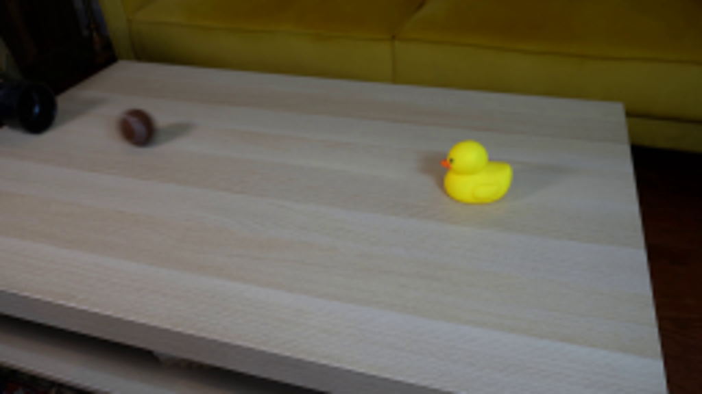
视觉工具实际返回图片 2
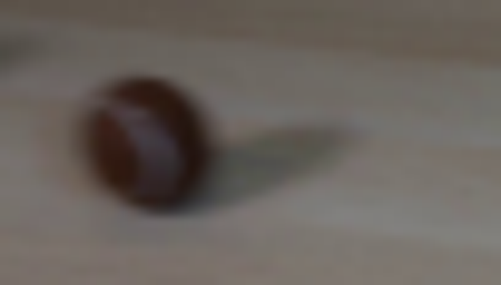
视觉工具实际返回图片 3
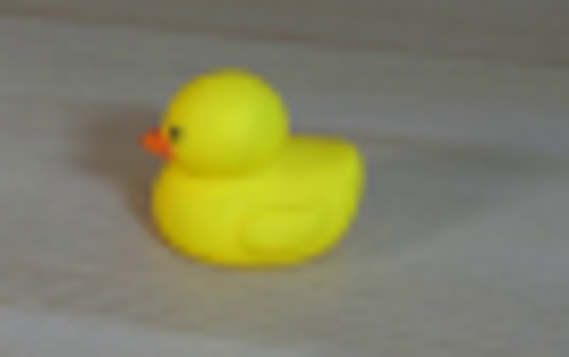
视觉工具实际返回图片 4
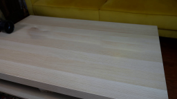
视觉工具实际返回图片 5
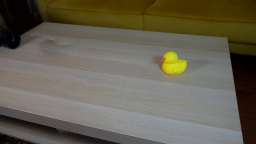
视觉工具实际返回图片 6
视觉工具实际返回图片 7
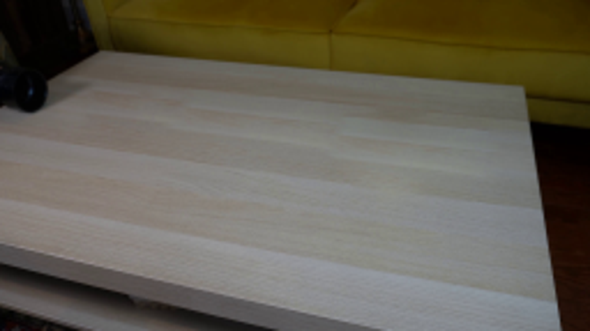
视觉工具实际返回图片 8
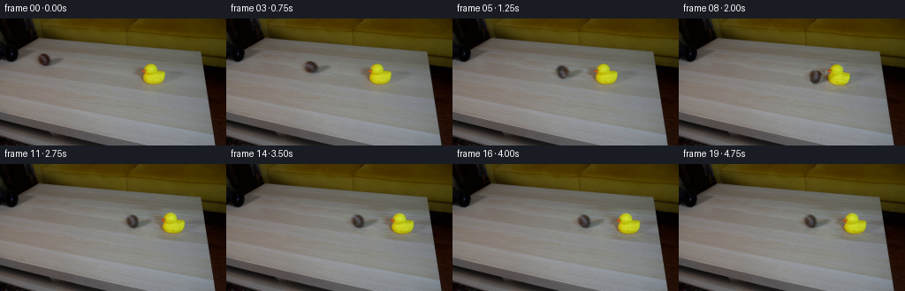
视觉工具实际返回图片 9
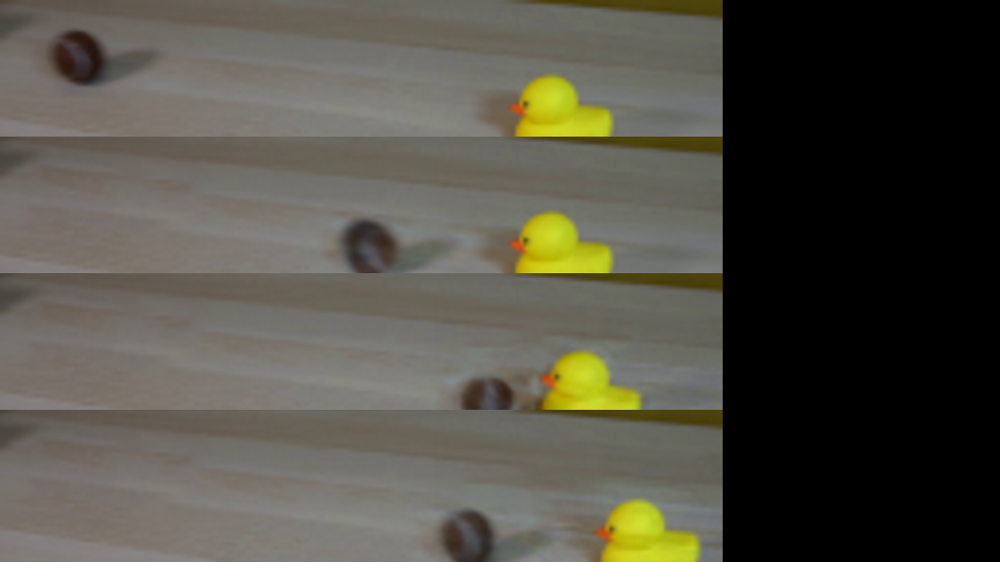
视觉工具实际返回图片 10
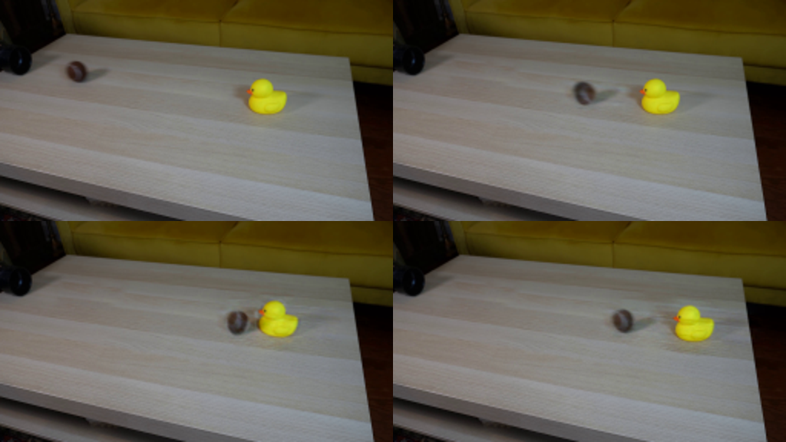
视觉工具实际返回图片 11
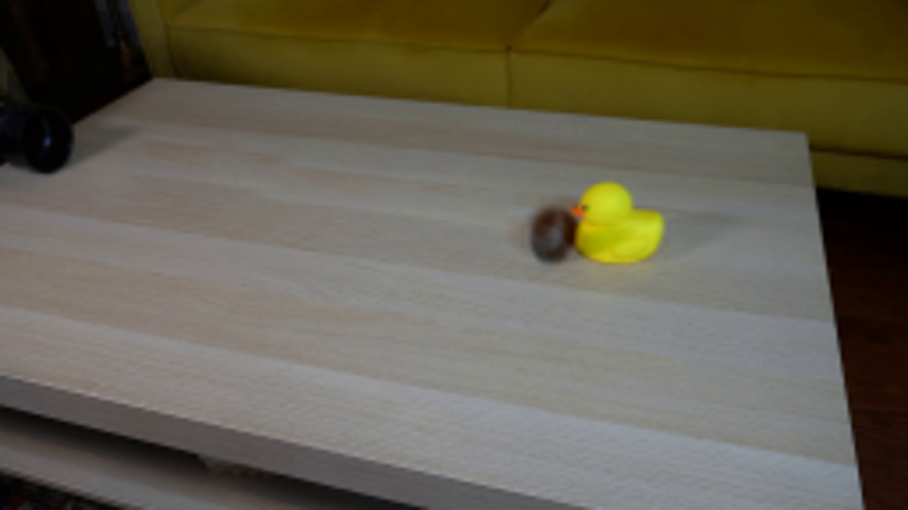
保存候选 3 份；完成命令 12 次；可验证图片返回 11 张。原始 API 响应与完整日志保留在本地。